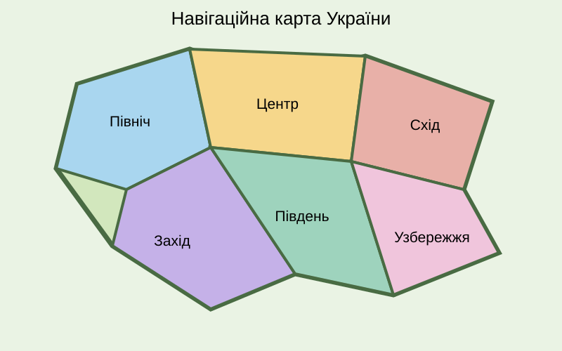

Наведіть курсор на область карти, щоб побачити підказку. Натисніть на область, щоб прочитати інформацію.

Північ України має великі лісові масиви, річки та природні заповідники.
Центральна Україна є важливим історичним та культурним регіоном.
Східні області відомі великими містами та промисловістю.
Захід України відомий Карпатами, архітектурою та народними традиціями.
Південні регіони мають степові ландшафти та родючі землі.
Південне узбережжя України омивається Чорним та Азовським морями.
До сторінки «Моя Батьківщина»